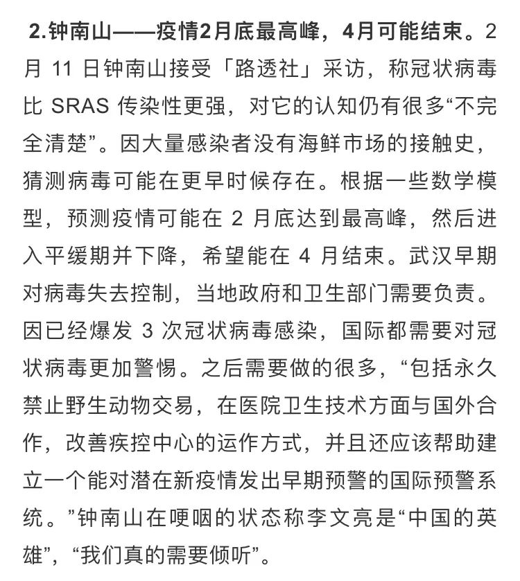
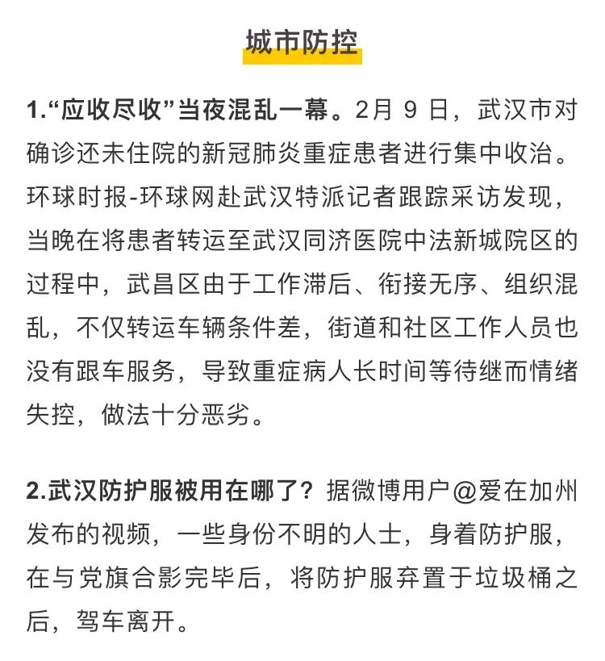
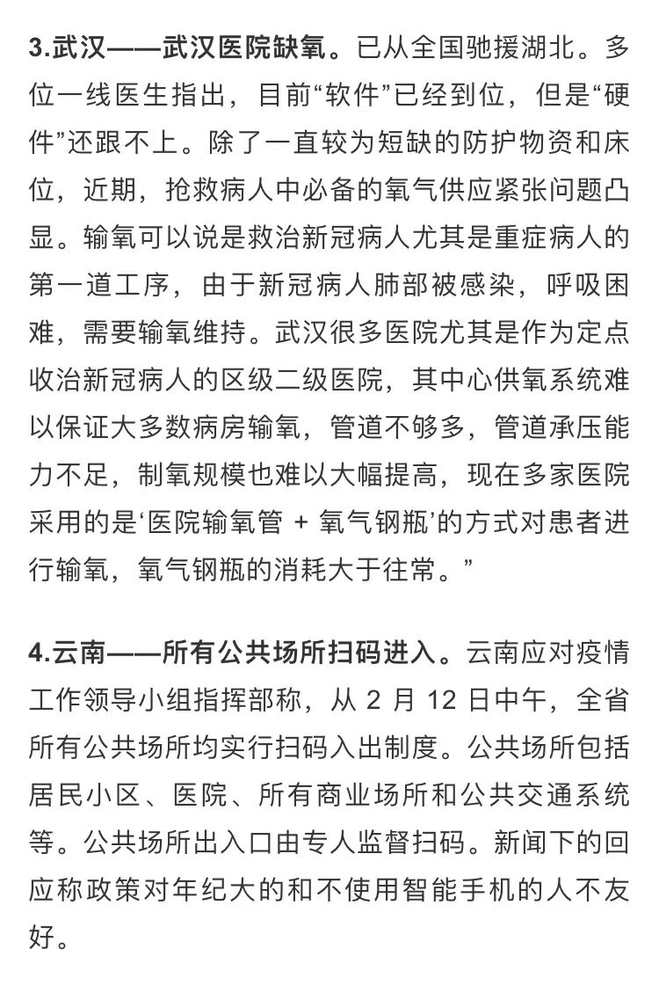
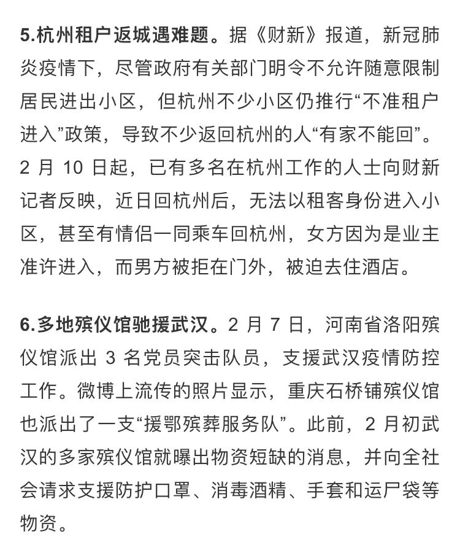
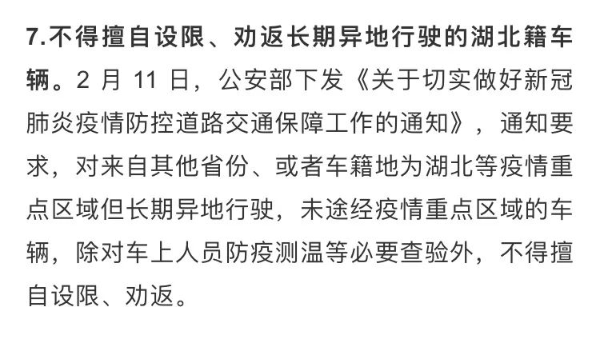
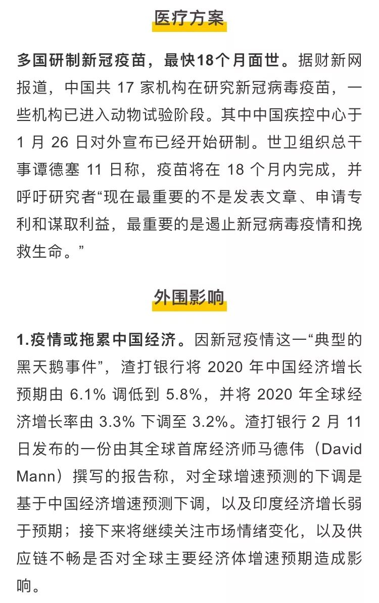
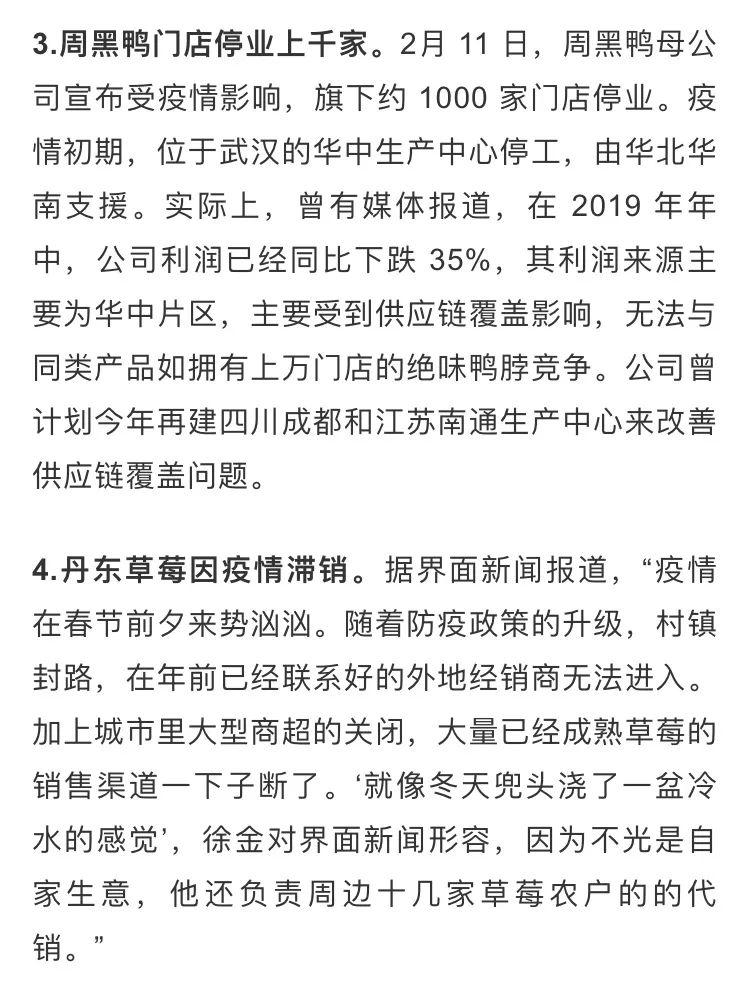
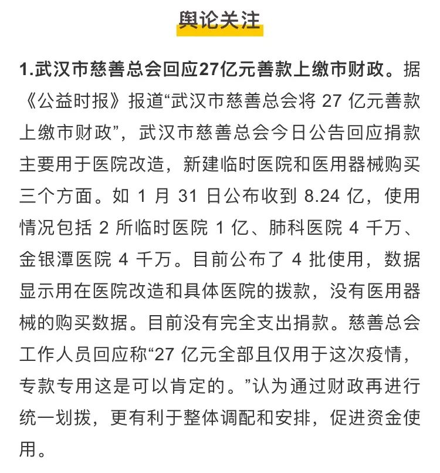
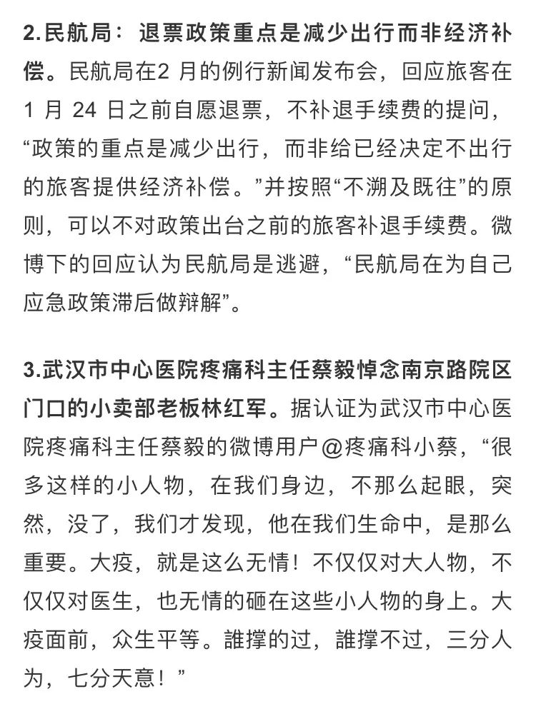
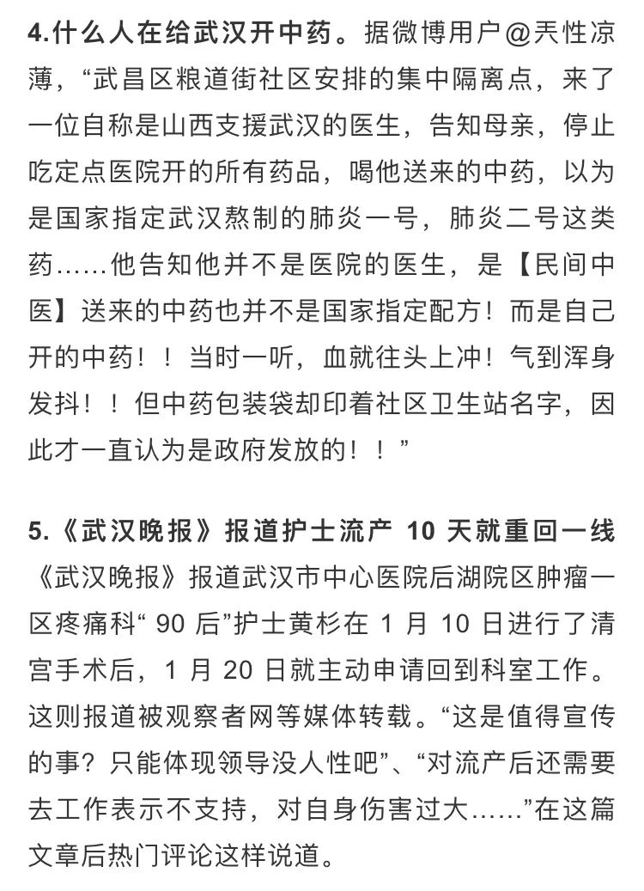

肺炎日记|2月10日：紧盯确诊收治数据 迎战复工高峰
原文链接 备份链接 【财新网】（记者 丁捷 综合）全国新冠肺炎现有疑似病例首次出现下降，2月9日一天内全国累计“消化”疑似病例9361例，其中湖北省为7472例，这也与疑似病例检测的速度加快有关，但“消化”的疑似患者去了哪里，是否全部进 …

根据丁香医生实时数据，截至 2020 年 2 月 12 日 18 时，全国累计确诊病例 44763 例，疑似病例16067 例，新增确诊病例 2055 例，新增疑似病例 3324 例。其中，重症病例 8204 例，死亡病例 1115 例，治愈病例 4934例。
















文中所有新闻和消息来源可通过下方链接查看：https://docs.google.com/document/d/1jzsFUjdcAW2CsPFbmYajd2JykdeNID2tncxh88WSvLc/edit?usp=sharing 《新型冠状病毒肺炎每日疫情播报 2.12》，可复制链接后科6学6上网打开
原文链接 备份链接 【财新网】（记者 丁捷 综合）全国新冠肺炎现有疑似病例首次出现下降，2月9日一天内全国累计“消化”疑似病例9361例，其中湖北省为7472例，这也与疑似病例检测的速度加快有关，但“消化”的疑似患者去了哪里，是否全部进 …
原文链接 备份链接 截至20日晚上20点，境内累计确诊新型冠状病毒感染肺炎病例218例，疑似病例7例，死亡4例，治愈出院25例。 武汉共有15名医务人员确诊为新型冠状病毒感染的肺炎病例，另有1名为疑似病例。 国家卫健委高级别专家组组 …
原文链接 备份链接 市场反馈认为，公共卫生事件对经济的影响有限；在应对疫情的关键时刻，政治和金融市场应对疫情展示出截然不同的态度 文 |《财经》特派记者 金焱 发自华盛顿 编辑 | 苏琦 2月11日，世界卫生组织通过社交媒体推特发布其确定 …
原文链接 备份链接 文 |《财经》数据研究员 徐进 图 |《财经》视觉中心 编辑 | 谢丽容 1. 今日概况： 根据国家卫健委数据，2月11日0—24时，31个省（自治区、直辖市）和新疆生产建设兵团报告，新增确诊病例2015例（湖 …
原文链接 备份链接 【财新网】（记者 赵今朝 综合）世卫组织正式将新冠病毒肺炎正式命名 “COVID-19”。疫情形势依然复杂严峻，疑似病人存量缓慢消化，医疗资源“捉襟见肘”，基层社区防控落实不到位。保卫战胶着状态之下，湖北省卫健委骤然 …